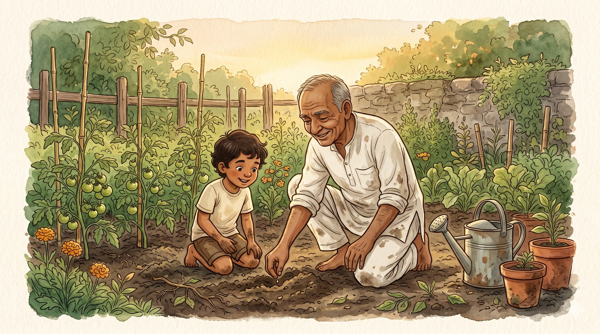
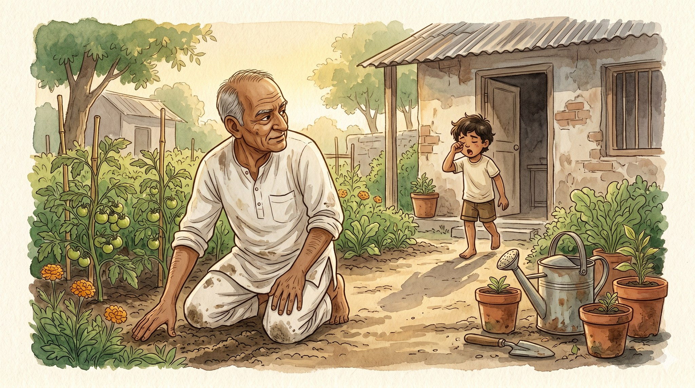
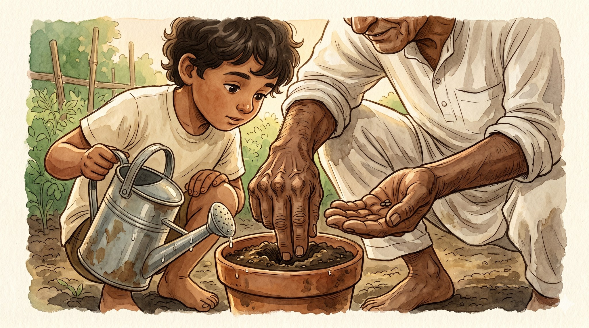
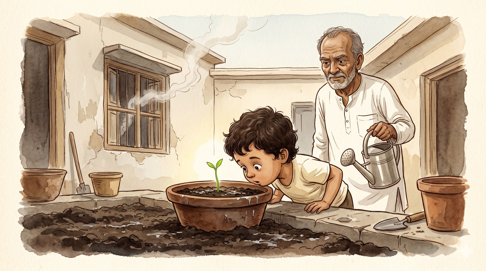
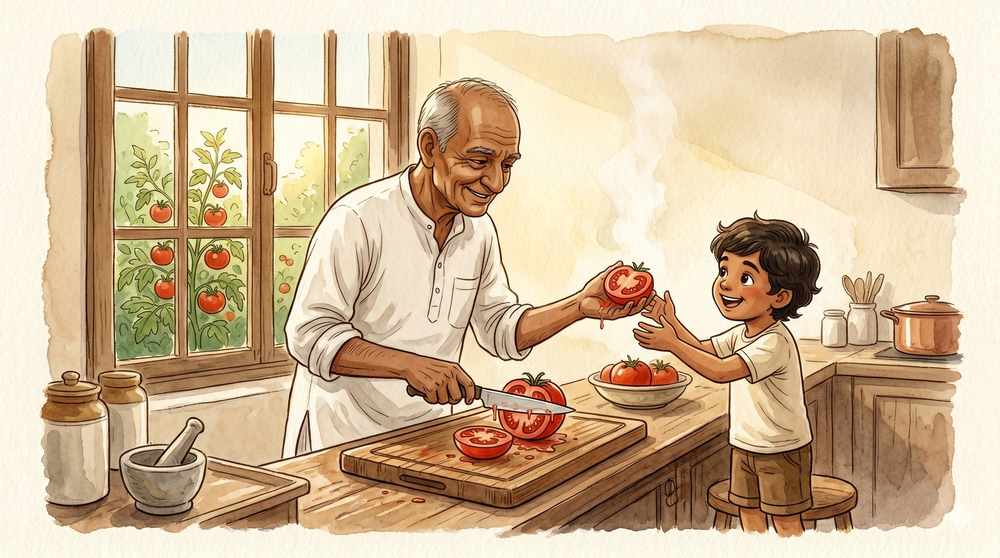
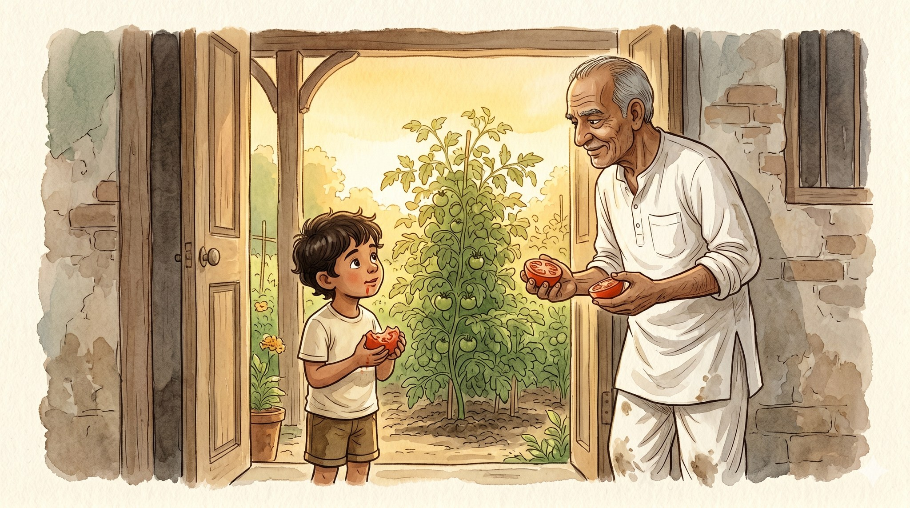

Hands in the Soil

A story for ages 5–9 about love that grows one seed at a time

Dada does not say I love you.
He says, "Come. Hold this."
Most mornings he is already kneeling in the garden when the kid wakes up: kurta dusty at the knees, hands brown and weathered, humming under his breath.
His face looks a little stern. It always looks a little stern.
But Dada says come, so the kid comes.

Dada shows how to press two fingers into the soil, just deep enough, no deeper. He sets one seed in the hole and covers it gently, like tucking something in.
"Now water," he says. "Enough to make the soil dark. Stop before it puddles."
The kid waters. The soil goes dark. No puddle.
"Good," says Dada.
That is all he says.

Every morning: come, hold this, water, stop. And every morning the dirt just sits there, dark and quiet, doing nothing at all.
Nothing happens. Nothing happens. Nothing happens.
Then one morning — a green line, thin as a thread, rising out of the soil.
The kid stares, nose almost in the pot.
Dada does not make a fuss. He just nods.

A leaf unfolds. Then two. Then a small yellow flower. Then a tomato: first a pale green button, then swelling, then blushing, then one morning fully red and heavy on its stem.
Dada picks it with both hands. In the kitchen he slices it on the wooden board and gives the kid half.
The kid bites in. It is warm from the sun. The juice runs down the kid's chin, and the kid does not care one bit.

"We grew this," says the kid.
"Yes," says Dada.
The kid looks up at him — dusty knees, rough hands, the face that always looks a little stern and is not stern right now. Almost a smile.
And standing there in the golden morning, holding half a tomato, the kid understands.
Dada never says I love you.
He says it every morning, in the dirt.
Some things grow because someone kneels in the dirt every single day. Not because they have to. Because they love you.
← Back to the library